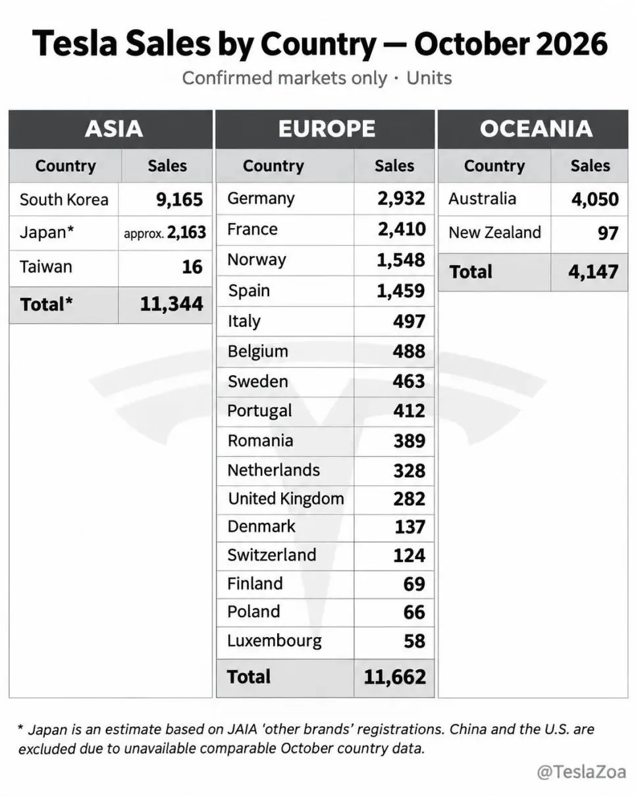

한국 10월 판매량 ㄷㄷ

한국 10월 판매량 ㄷㄷ
노조?
테슬라는 칼단종 시켜도 빨아줘서 가능한거
다합쳐서 26000정도인데 한국혼자 30퍼가 넘는거네 ㄷㄷ
fsd만 풀어봐 더 팔릴거야
테슬라 새끼들아 뭐라도 좀 해봐 시발!!!!!!!
내차도 FSD 풀어달라고!!!!
???: 국익을 위해 참아라
딱 애플 포지션임
국내 삼성 엘지가 핸드폰 점령 했을때 애플(와이파이) 나오고
국내 현기가 자동차 점령 했을 때 테슬라(FSD)나오고
fsd 풀리면 테슬라 코리아 no.1현기 지옥 열릴 예정 현토부 멱살잡고 케리로 목숨 연명 중이쥬? 가격 적당히 올려라 가격 하도 올려놔서 as 좆같아도 하차감으로 타는 비엠이나 짱츠로 눈돌리기도 가시권이다
응 현기 이 ㅅ벌
가격만 존나 쳐 올리고
옵션으로 가격 또 쳐 올리고
점유율 떨어지고
주가 떨어지고
가격 인상 원툴이쥬? 운전석 돌아간다고 마케팅 돌릴때 테슬라 차가 하늘을 돌면서 날쥬?
니들 아주 돌겠쥬?
짱슬라 모델Y 덤핑 판매해서 그럼
짱아이오닉v 가져와서 팔면 되는데 안팔쥬?
미친 ㅋㅋㅋㅋㅋㅋ 한국 판매량이 전유럽 판매량이랑 비슷하네;;;;
저기에 FSD까지 되면 상상 초월하겠는데
나도 다음차 무조건 테슬라긴한데
우리 fsd신청하는 꼬라지보니 우리시장 자체에 큰 관심은 없어보임
Fsd된다해도 버스전용차로같은 우리나라 로컬라이징은 해줄지 몰겠음
이런건 현기가 자율주행되면 걔네께 더 좋을거같긴함
모y가 다른 전기차에 비해 가성비좋긴한데 테슬라가 원가절감한거에 비하면 싼거 맞나 의문임
물론 이 모든걸 감안해도 fsd 풀리는 순간 수동차되는 차 살 바에 난 테슬라차 살거임 운전 존나싫음
‘왜 1차선으로 안가지? 병신 휴먼ㅋㅋ‘
나도 자율주행 풀리면 테슬라 사고싶다
독프노스 다합쳐도 따버리네...
현대 좆됐네 ㄹㅇ
그러고보니 불난다고 하던거 쏙들어갔네
항상테슬라 글에 fsd가 막혀있다는말이 많은데
한번씩 자율주행 쓰고있다는 글이나 댓글도 보이는데 다른거임?
미국에서 만든건 가능한데 그게 sx같은 지금 단종된 최신버전이거나
중국 생산전에 만든 구형 버전임
구형은 fsd도 좀 라이트버전이라 성능떨어지고
Sx는 풀성능 fsd임
그러니까 대충 옛날 코로나시절즈음 수입해다가 사온 사람들거는 된다 이거지?
중국생산 테슬라 안됨, 배 태워서 미국에서 가져온 테슬라는 됨
FSD 막혀있는데도 엄청 매리트가 있는거임? 막연히 언젠가 풀어주겠지 싶어서 사는건가
ㅇㅇ 평생 막혀있을게 아니잖아
근데 다른차사면 자율주행 허용된다해도 절대 쓰지못하니까 사는거
평생은 아니지만 5년이상은 막혀있을것같은디 ㅋㅋ 다음차살때는 풀려있음졸겠다
아방이가 풀옵이면 4천 초중반인데 테슬라랑 아주 큰가격차이 가 안나는것도 한몫한거지
보조금도 지금도 주는진 모르겠다
양카존나많음 k5 에서 테슬라 or 카니발 둘중하나로 진화한듯
부자들이 많아서 그런듯
아반떼 4천주고 살바엔 500~1000 더 쓰고
모델 3나 y깡통으로 가는거지
서민은 5천짜리 차 사기 쉼지않음
아반떼 4천 주고 ㄱㄱ
한국 사람들이 차랑 스마트폰 같은거 교체 주기 짧은게 클듯
중고로 팔고 새차 산다 이런 마인드로 5년 내외로 차 바꾸는 사람들 꽤 되더라
부자까진 아님 아반떼 살사람이 사는거지
중국이 없는데?
대부분 나라에서 자율주행도 안풀린 기본기도 없는 모델Y 살바에 돈 300 더 들여서 캠리 하이브리드 든든하게 20년 타고다니는게 맞지
테슬라는 가성비로 타는게 아니라 감성의 영역임
캠리 세단이잖아
나 노가다 하는데..
suv ㅊㅊ 좀... 쌍용 타다가 부품 수급 어려워서 정비가 짜증나 이젠 못 타 것다..
노가다 하는거면 짐공간이나 수송공간 짱짱한게 나은것 같은데 부품수급 생각하면 외제차 계열 보다는 현기의 엔진 MPV 같은거가 낫지 않을까 싶은데, 현기 전기차는 역량이 안따라줘서 부품수급과 수리가 힘든듯
- 현대 : 스타리아, 싼타페
- 기아 : 카니발
- 토요타 : 시에나
토요타 시에나는 일본의 카니발 포지션이고 인력수송이나 짐 운송면에서 괜찮지만 외제차 특성 상 부품수급은 별로 안좋다고 보임. 그래도 감안하고 싶으면 고려해보는 것도 좋을 듯
흠.. 내가 현장사무직(시공사 기사) 인데도
적재함 괜찮은 차를 소개 해주니까 .매력적인 걸?
현대 내연쪽으로 봐야것다...
여기저기 다니다 보니 전기충전은 고되것다.
경우의 수를 많이 줄여줘서 고마워.
https://youtu.be/Xl4BGXiKoLw?si=qtR2il8pBEa7wnUD&t=56
현차 가격을 병신같이 계속 올리니까 테슬라가 가성비갑
가성비라서
전세계에서 테슬라가 제일 싼게 한국이지않나 중국재고떨이..
내년에 테슬라 y 살까 고민중
Fsd야 언젠가 풀리겠다는 마인드로 생각중이야
테슬라 전세계에서 한국이 제일 싸지
현기차 본진이니까 현기차 죽이려고
중국공산당에 세금바치고
중국에 기술 유출되고,
중국 부품사 키워주는 거 감수하고
중국근로자에게 기술 가르치고
중국부품 써서 만든 중국산 모델Y
한국에 덤핑치고 있는 거임
테슬람들은 니들 싸게 테슬라 사게 해준
현대 기아에 매일 감사해라
뭐 내수차가 그돈씨하게 만든결과가 크지
왜 꼭 우리나라 기업들은 내수를 개 ㅈ같이 만들까
주변에 보면 아이폰 쓰는 애들이 테슬라 많이 사더라 신기하게
대충 FSD아직 안풀렸고 수리비 비싸고 중국에서 만들고 어쩌고 저쩌고
현기가 왜 로봇에 집착하는지 잘 알겠네